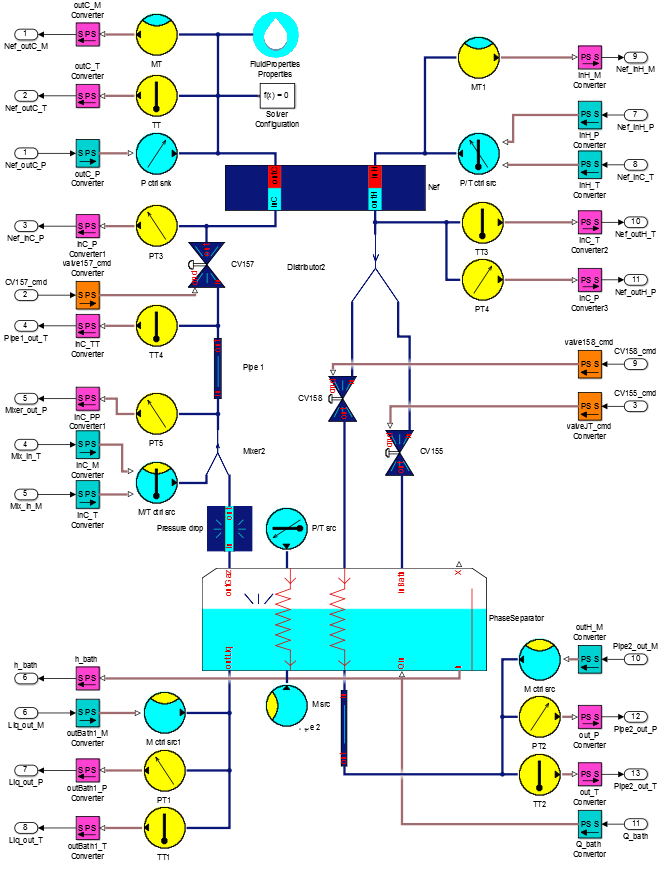

2. Joule Thompson cycle 
a. Description
In the Joules-Thomson cycle, a part of the helium cooled and
liquefy, for the use of the final client.
It's composed of :
- One cross current exchanger
- Three valves
- One mixer
- Two pipes
- One pressure drop
- One phase separator
Note : only one of the two exchangers of the phase separator is
used in this case.
b. Simulation
Here is the set of parameters that you could use for the
simulation :
Nef
- Number of elementary loop = 8
- Hot pipe volume = 2.3e-3 [m^3 ]
- Cold pipe volume = 2.3e-3 [m^3 ]
- Mass of the aluminium = 13 [kg ]
- HP drop coefficient = 0.6 [s*bar/kg]
- CP drop coefficient = 0.35 [s*bar/kg]
- Exchange coefficient = 480 [J/s/K ]
- Initial hot pressure = 16 [bar ]
- Initial hot temperature = 8 [K ]
- Initial cold pressure = 1.14 [bar ]
- Initial cold temperature = 4.5 [K ]
- Initial hot mass flow = 0.042 [kg/s ]
- Initial clod mass flow = 0.042 [kg/s ]
Valve CV155
- CVmax = 0.55
- Rv = 10
- Xt = 0.86
Valve CV157
- CVmax = 20
- Rv = 10
- Xt = 0.86
Valve CV158
- CVmax = 0.58
- Rv = 10
- Xt = 0.86
Phase separator
- Exchange coeff (exch 1) = 0.58 [W/K]
- Ideal (exch 1) = 10
- Delta T (exch 1) = 0.86 [K ]
- Number of elementary loop (exch 1) = 0.86
- Exchange coeff (exch 2) = 0.58 [W/K]
- Ideal (exch 2) = 10
- Delta T (exch 2) = 0.86 [K ]
- Number of elementary loop (exch 2) = 0.86
- Initial pressure = 1.15 [bar]
- Maximum heigh = 0.8 [m ]
- Surface of the bath = 0.1662 [m^2]
- Initial heigh = 60
Pressure drop

©2015 The PI-02